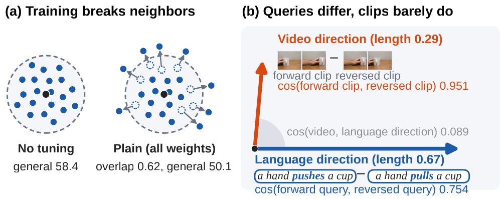
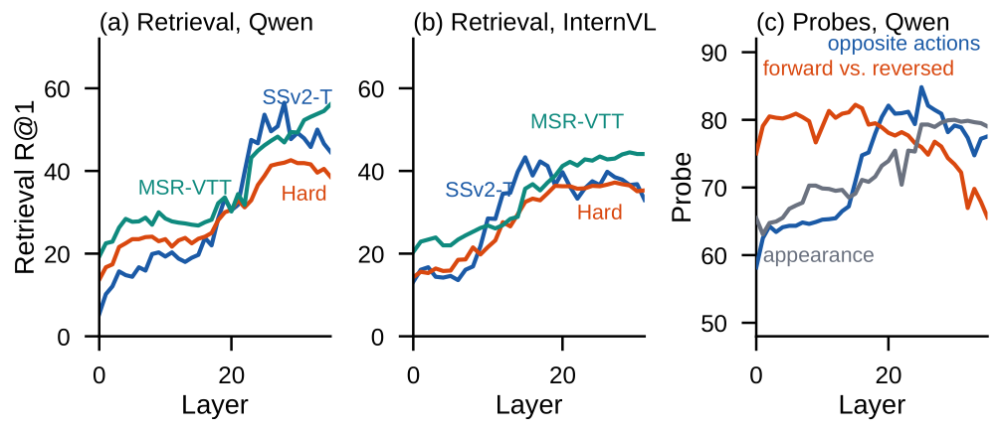
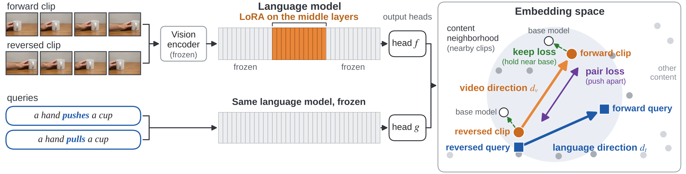
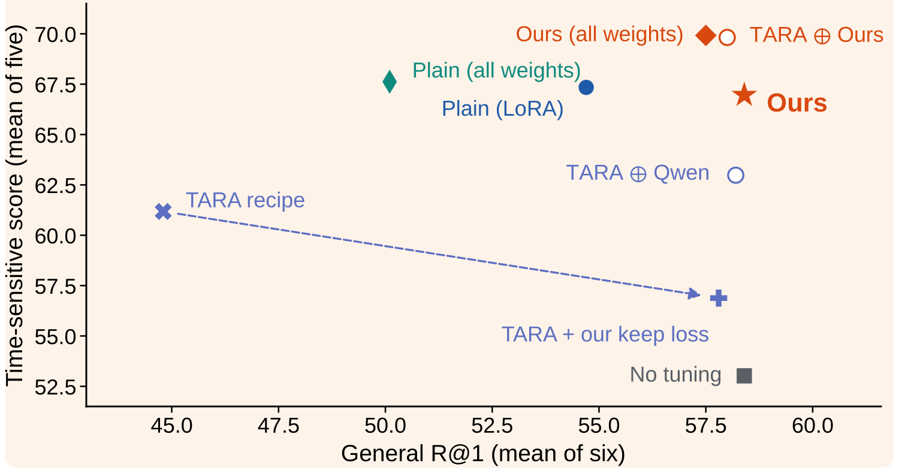
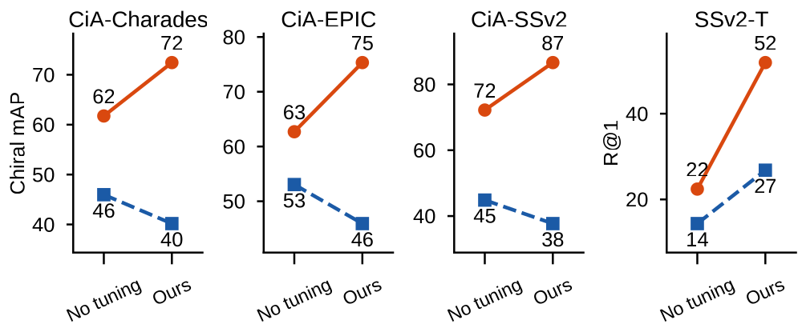

The two clips show the same frames in opposite order, and their queries differ in one word. The base model barely separates such clips (mean cosine 0.95 on RTime). We teach it the difference while keeping general retrieval.
(mean of six benchmarks)
(each clip's reversed copy in the gallery)
(LoRA; output heads come on top)
Qwen3-VL-Embedding-8B, Ours against the base model, mean of three seeds.
Abstract
In text-to-video retrieval, MLLM-based embedding models do well when the text describes the scene (general retrieval), but poorly when it describes actions and their direction (time-sensitive retrieval). TARA, a pioneering work, fine-tunes such a model on text triplets with temporal hard negatives; it improves time-sensitive retrieval but lowers general retrieval (mean R@1 over six benchmarks in our rerun on Qwen3-VL-Embedding-8B: 58.4 → 44.8), and its released model keeps general retrieval only when ensembled with Qwen3-VL-Embedding. Our goal is strong general and time-sensitive retrieval with one model and one vector per clip. Three findings lead to three simple components.
Keep loss: general retrieval follows how far the output embeddings drift from the base model, not how far the weights move; we therefore keep them near the base model, which keeps most general retrieval even without general-domain data. Pair loss: the text embeddings of an action description and its reversed-direction version are well separated, but the video embeddings of a clip and its reversed copy are close; we therefore widen the gap between the video embeddings of each clip and its reversed copy, in the direction of the difference between their two text embeddings. Middle-layer LoRA: frames are combined in the middle layers, and temporal information peaks in or just after them; we therefore train LoRA only on these layers, which nearly matches training all weights on most time-sensitive benchmarks with 0.15% of the parameters and keeps general retrieval better.
General R@1 stays at 58.4, while R@1 with each clip's reversed copy in the gallery rises from 55.5 to 63.2; the gains carry over to unseen benchmarks and InternVL2-8B-RA. The keep loss is also a remedy for the TARA recipe (general R@1: 44.8 → 57.8), and ensembling TARA with Ours gives the highest scores on RTime and unseen CiA among the compared models.
Three observations
1. Training breaks neighborhoods
Training for time changes which clips are close to each other, and general R@1 falls (58.4 to 50.1 with all weights).
2. Video barely separates direction
Text embeddings of the forward and reversed queries differ clearly (0.669), but the clip embeddings much less (0.290), and the two differences are nearly orthogonal.
3. Frames meet in the middle layers
Blocking attention between frames from layer 12 lowers CiA-SSv2 Chiral by 10.6 points, but from layer 24 by at most 0.5.


Method

Keep loss
Holds the output embeddings of video and text near those of the base model.
Pair loss
Makes each query prefer the clip of its own direction, pushing a clip away from its reversed copy.
Middle-layer LoRA
Trains only the layers that combine frames (12–23 on Qwen).
Results

| General | Hard | Binary | CiA-Charades* | CiA-EPIC* | SSv2-T | |
|---|---|---|---|---|---|---|
| No tuning | 58.4 | 55.5 | 62.8 | 61.7 | 62.7 | 22.4 |
| Plain (LoRA) | 54.7 | 57.8 | 68.7 | 71.4 | 75.6 | 63.2 |
| Plain (all weights) | 50.1 | 59.7 | 70.7 | 70.3 | 72.6 | 64.8 |
| TARA recipe (our rerun) | 44.8 | 57.2 | 75.1 | 67.8 | 75.0 | 30.8 |
| Ours | 58.4 | 63.2 | 72.0 | 72.4 | 75.3 | 51.9 |
| Ours (all weights) | 57.5 | 64.2 | 73.5 | 72.3 | 75.2 | 64.4 |

Limitations
The trade-off is softened, not removed: Plain and all-weight training are higher on some time-sensitive columns. The SSv2-T gain comes from training on the template names. On unseen CiA the gain is on opposite actions; with other actions in the gallery, scores can fall (CiA-Charades Static −5.1).
BibTeX
@article{oyama2026teaching,
title = {Teaching Time Without Losing General Retrieval: Adapting Multimodal Embeddings for Time-Sensitive Video Retrieval},
author = {Oyama, Toya and Lienhart, Rainer and Satoh, Shin'ichi},
journal = {arXiv preprint arXiv:2611.32971},
year = {2026}
}